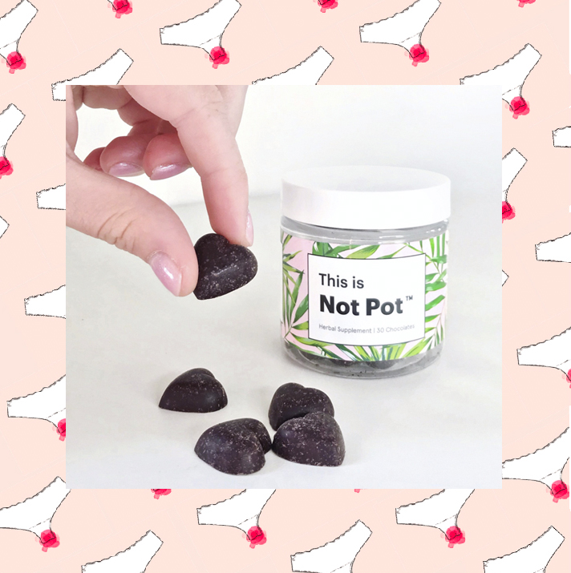
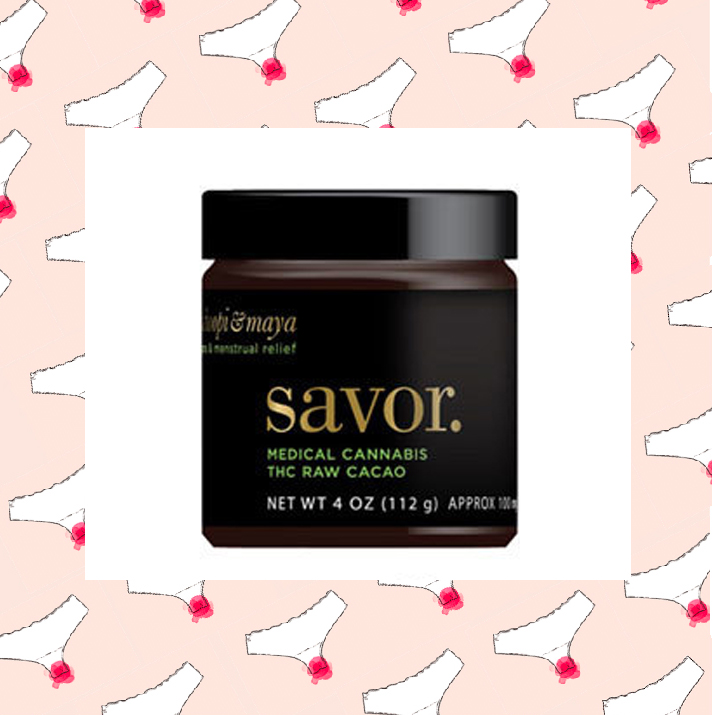
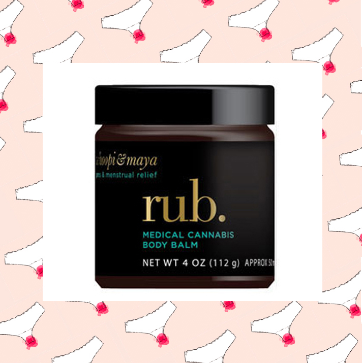
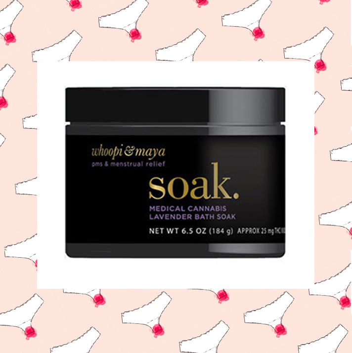
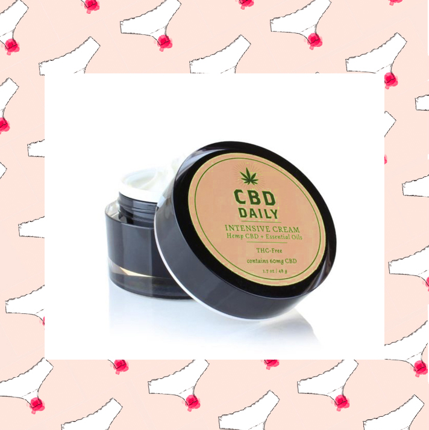
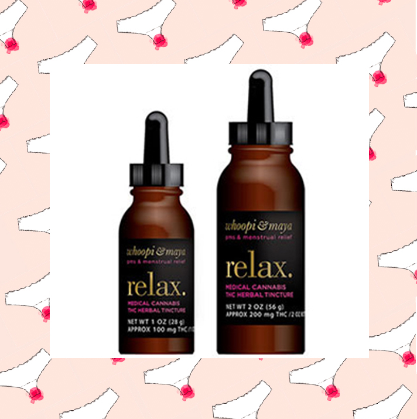

No hay nada divertido en estar encerrado en la cama con colicos menstruales.
Ser atacado por tu utero cuando necesitas hacer algo no es exactamente la
idea de un buen dia para nadie, pero afortunadamente hay varios productos
de cannabis que pueden ayudarte a salir de esta agonia.

Producto derivado solo del CBD, los chocolates Not Pot son lo que estabas buscando para el dolor cronico y la ansiedad, tambien funcionan para los calambres musculares. Ademas, es chocolate; no puedes equivocarte con chocolate en tu regla

Aunque este producto fue creado para sindrome premenstrual y el alivio de este, es en realidad un producto muy versatil; es facil hacer un chocolate caliente, o derretirlo y untarlo en una tostada o fruta o, ya sabes, a tu pareja.

Una mezcla entre un analgesico, con otras hierbas y aceites esenciales para relajar los calambres uterinos y aliviar las articulaciones y el dolor de espalda que parecen ser obligatorios de la regla. Ayuda a aumentar el flujo sanguineo y la circulacion en el área abdominal y mejorar los altibajos asociados con PMS.

Ya sea que este buscando alivio para los dolores, achaques y dolores asociados con la regla o necesitas relajarte despues de un largo dia, Whoopi y Maya's Soak, un baño de cannabis como ningun otro, es justo lo que necesitas para consentirte en esos dias.

Preparada con una combinacion exclusiva de aceites esenciales, esta crema intensiva proporciona un alivio instantaneo y prolongado del dolor.

Las tinturas son medicamentos liquidos tomados por via sublingual y, por lo tanto, son de accion extremadamente rapida. Relax funciona muy bien para los calambres que vienen con la regla. Solo 1 gotero es suficiente para un sueño profundo sin dolor.